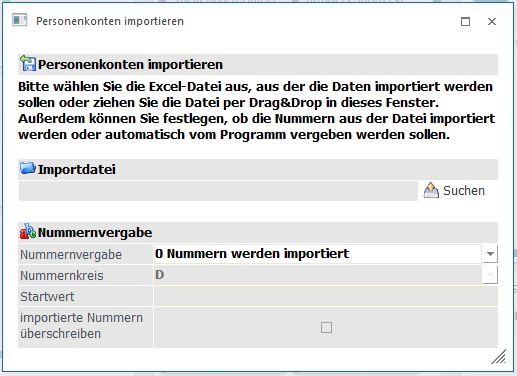
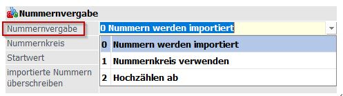
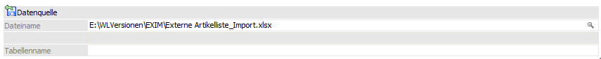
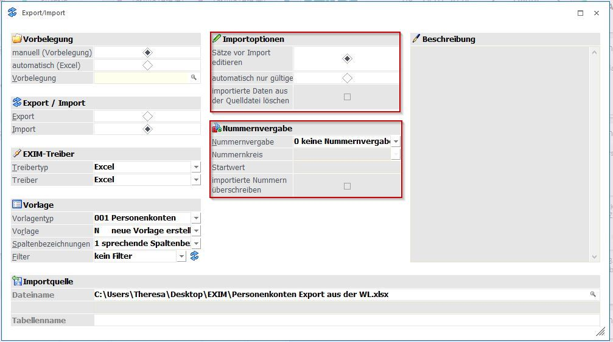

Abhängig vom Programmaufruf wird der entsprechende Vorlagentyp aufgezeigt.

Importdatei
Über den Button "Suchen" wird die Excel-Datei mit den zu importierenden Daten im Bereich "Importdatei" aus dem File-Dialog ausgewählt und hinterlegt. Es besteht aber auch die Möglichkeit die Excel-Importdatei via Drag & Drop in das Feld zu ziehen.
Der Dateiname wird standardmäßig inklusive des Pfades angezeigt.
Wird aus Outlook eine Datei in das Feld gezogen, wird diese im Temp-Verzeichnis gespeichert und nur der Dateiname angezeigt.
Nummernvergabe
Ø Nummernvergabe
Welcher Key, also der eindeutige Schlüssel für den Stammdatensatz (z.B. "Kontonummer", "Artikelnummer" usw.), aus der Datei verwendet werden soll, wird im Bereich der Nummernvergabe vorgegeben.

ü 0=Nummern werden importiert: die Nummern aus der Importdatei werden als Key verwendet (es sind keine weiteren Eingaben notwendig).
ü 1=Nummernkreis verwenden: der Import-Key ist der Nummernkreis, vorausgesetzt, es gibt für diesen Vorlagentyp Nummernkreise und diese sind als Stammdaten angelegt. Der Nummernkreis kann aus den vorhanden Stammdaten der WinLine ausgewählt werden. Es ist weiterhin möglich "importierte Nummern überschreiben" zu wählen.
ü 2=Hochzählen ab: die in der Importdatei enthaltenen Stammdaten werden anhand des hinterlegten Startwertes hochgezählt. Es ist möglich "importierte Nummern überschreiben" zu wählen.

Button
Ø Experten-Modus
Um weitere Importeinstellungen vornehmen zu können, steht der Button "Experten Modus" zur Verfügung.

Importoptionen
ü "Sätze vor Import editieren" ermöglicht die Bearbeitung der Datensätze in der WinLine bevor der eigentliche Import stattfindet
ü "automatisch nur gültige" bewirkt, dass ohne Hinweismeldung alle als gültig erkannten Datensätze importiert werden.
ü Bei der Verwendung eines anderen Treibertyps ist es möglich, die "importierten Daten aus der Quelldatei zu löschen"
Nummernvergabe
Siehe hierzu 5.10.1.